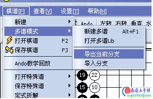
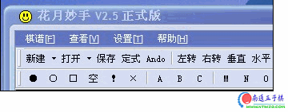

花月妙手软件升级贴
#1 花月妙手软件升级贴 作者：小丸.net 发表时间：2007-3-10 16:08:32
请大家踊跃发言，希望软件，在什么地方升级，我争取在以后的版本地升级该功能。在不久的将来，希望该软件成为五子棋最好的打谱软件。
#2 Re:花月妙手软件升级贴 作者：小丸.net 发表时间：2007-3-10 16:08:59
此次更新预计添加的功能有 ：〔更多功能期待您的提议〕
主要添加的功能：打开LIB谱，导入导出分支。
保存POS,SGF，LIB谱。还有读入在线棋谱。
支持在线升级谱库。
软件也支持在线升级。
加入容错，防止读谱错误。添加拖曳功能。
棋谱可以旋转。
软件永远免费。。。


#3 Re:花月妙手软件升级贴 作者：小丸.net 发表时间：2007-3-10 16:09:12
软件更新预留位置#4 Re:花月妙手软件升级贴 作者：小丸.net 发表时间：2007-3-10 16:09:23
软件更新预留位置#5 Re:花月妙手软件升级贴 作者：有志青年 发表时间：2007-3-10 17:20:38
引用：
原文由 极地剑客 发表于 2007-3-8 17:43:51 :太好啦~偶可以提个建议不~偶需要加个功能~设置倒记时功能（时间可以自设）+到时声音警告+警告完提示落子功能。谢啦！
这样至少花妙是第一个强悍的自我训练解题锻炼计算力的软件落~
引用：
原文由 极地剑客 发表于 2007-3-8 17:47:50 :
噢~又想起个东东！~就是能把做过的题加入自己的题目库~有删除，添加，管理，注释题目的功能~要是能上传题库那就更酷了，有好题，可以大家一起做，一起锻炼了，到时候青年可以组成南通五子棋题库落~~不过技术方面的东东偶就不知道啦~只能提些主意落~38节祝论坛地所有MM节日快乐~下线了~88
#6 Re:花月妙手软件升级贴 作者：yidefei 发表时间：2007-3-11 1:55:56
这个软件以前用了一下，发现不能打开LIB谱，就没有再用了。如果某一天能打开来，或者比LIB谱更好，能够有拥有更多的功能，或许我会弃LIB而用这个软件的！
我希望能够有自动行棋这一功能，在行棋的时间设置上也有一定的设置。。。。。
#7 Re:花月妙手软件升级贴 作者：极地剑客 发表时间：2007-3-11 16:04:31
自动行棋？如果说处理自动冲四必挡，还好说哦~如果可以完全对抗~那就是对弈类的软件了~#8 Re:Re:花月妙手软件升级贴 作者：有志青年 发表时间：2007-3-11 16:32:50
南通五子棋将努力为该软件提供免费的有效的服务，大体思考如下：
1、现有的南通五子棋谱库以后仅有管理者可以添加数据〔或者某个特定等级以上用户可以添加〕。也就是说所有数据来自官方，保证棋谱内容的规范性和有效管理。
2、新建一个sql数据库〔不是表〕，然后将数据库的账号、密码、字段名称、类型及含义交给花月妙手开发者。
3、花月妙手软件的终端用户可以将自己打谱的局面点击上传到数据库，就到了我们的sql数据库中。这样数据库将不断壮大。
4、同时，我们站点制作一个浏览页面并可对棋谱局面留言〔仅可浏览和留言
还有若干思考：
通过以上操作应该实现了分离，对于我们的数据库和空间来说是不是安全了呢？
花月妙手开发者是否考虑如何对软件终端用户随意上传棋谱作出必要的限制，否则出现两天就添加上万条垃圾棋谱的现象咋办？
#9 Re:花月妙手软件升级贴 作者：极地剑客 发表时间：2007-3-11 17:00:11
那到是哦~好象现在NT慢棋的利用率不是很高哦~开发出很多新功能，但是用的比较少？不过我很期待加时间的那个功能~对做题帮助挺不错的~反正我家电脑不联网来着~#10 Re:花月妙手软件升级贴 作者：天津刘源 发表时间：2007-3-12 11:27:04
请问.为什么2.1版的转到定式谱的棋盘打不开#11 Re:花月妙手软件升级贴 作者：小丸.net 发表时间：2007-3-12 18:58:52
楼上的你应该没有装JAVA虚拟机吧
#12 Re:花月妙手软件升级贴 作者：26 发表时间：2007-3-17 14:36:34
建议棋盘在花月妙手上可以往上下左右斜平移，
可以简单方法导出方便论坛贴棋谱图。
#13 Re:花月妙手软件升级贴 作者：longfx 发表时间：2007-3-17 19:35:50
http://www.ntwzq.com/ShowPost.asp?PageIndex=2&ThreadID=1704
26跟我说的应该是同一个问题.
#14 Re:花月妙手软件升级贴 作者：gerbo 发表时间：2007-4-7 20:51:06
对开发作者（小丸．net)的一点建议：
１）．俺对格式不懂，但希望能把黑石＼中游＼ＱＱ游戏＼边锋＼等等，一些较常去的游戏和常用软件的格式包含在内．如有些不能包含在一起，可考虑切换格式功能．
２）．方便查询棋谱．能按２４种开局查询这一类的棋谱（例如残月开局），要求能保存的棋谱数据足够大．
３）．★★★★★最关键一点：要求添加备注，方便对棋谱给予说明／重点提示．
对有志的一点建议：
棋谱库编排＼校对都是一个人，难免会出现差错，希望不求量，把好每一棋谱的关，也许一天２０棋谱确实困难，但质量第一，慢点点，我也看不过来．